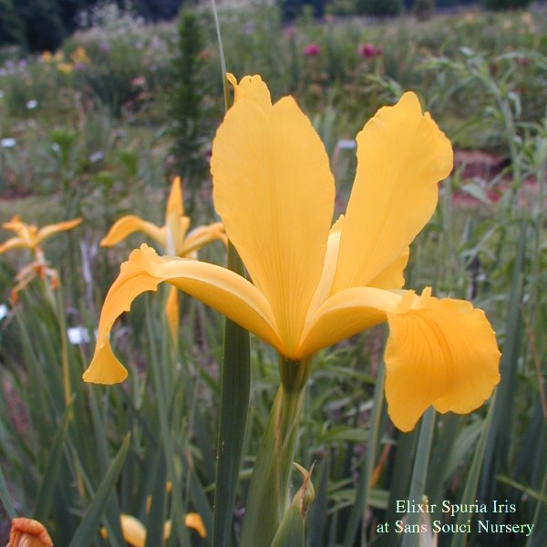

About Spuria Irises |
|
Spuria irises are beardless irises which bloom towards the end of the spring Tall Bearded Iris blooming season and help to extend the progression of bloom in the perennial garden. Among the desirable attributes of Spuria Irises is the survival time of the cut flowers. The blossums are also smaller than those of Bearded Irises supported on strong stems. The smaller size of the individual blooms means that a spring rainstorm does not injure the flowers. Spuria flowers are striking in form with proportionally tall relatively slender standards and falls that extend outward on a relatively narrow petal but may have a sudden downturn where the petal boadens into a wider oval shape. They delight the eye by presenting a different form from a variety of different viewpoints. Colors range from white through yellows to deep bronzy purples. They often show interesting reticular patterns on the petals. Cultivars with blossums with interesting color combinations are available in addition to self colored cultivars. |